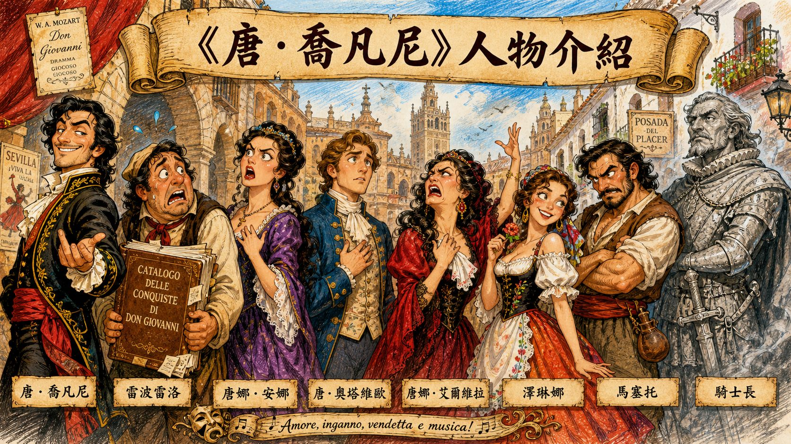
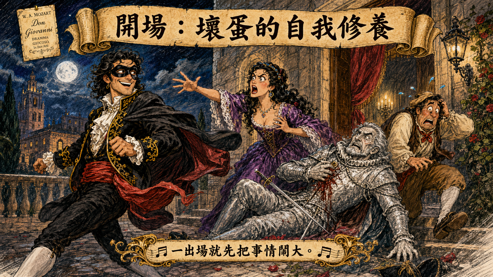
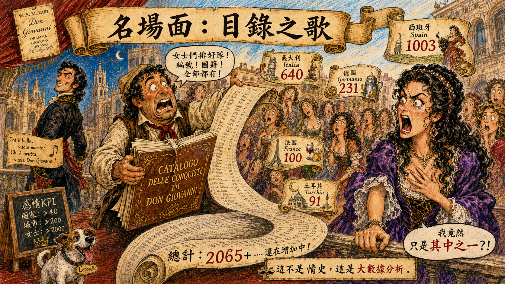
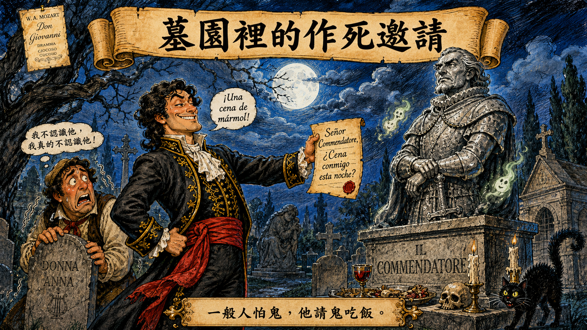
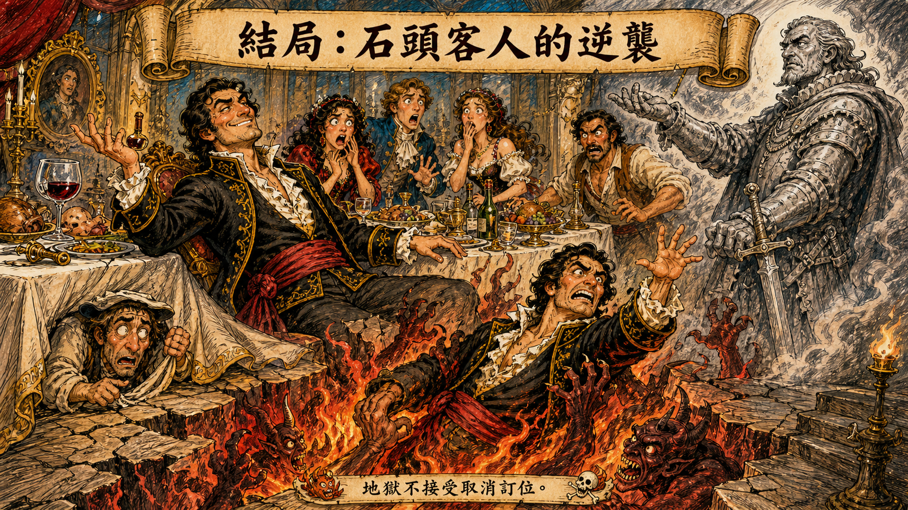

唐・喬凡尼 Don Giovanni
貴族、浪蕩子、災難製造機。人生目標不是修身齊家，而是把全歐洲變成他的感情受害者地圖。
《唐・喬凡尼》：時間管理大師的地獄直通車，從深夜闖禍一路開到石像客人來收帳。
各位鄉親啊，今天我們要講的這部戲，是莫札特的神作 《唐・喬凡尼》。如果說《弄臣》裡的公爵是渣男，那唐・喬凡尼就是渣男界的祖師爺，是站在食物鏈頂端的掠食者。
他的生命 KPI 只有一個：蒐集女人。這部歌劇的全名其實叫《唐・喬凡尼：浪蕩子的懲罰》，但說書人更喜歡叫它：《時間管理大師的地獄直通車》。

貴族、浪蕩子、災難製造機。人生目標不是修身齊家，而是把全歐洲變成他的感情受害者地圖。
喬凡尼的僕人，兼祕書、掩護組、危機處理部與受害者名冊管理員。他最想辭職，但一直沒有成功。
貴族千金，開場就遭遇喬凡尼入侵，父親又被殺。她的劇情線基本上是偵探劇加復仇劇。
安娜的未婚夫，溫柔、正派、很會唱，但行動力常讓觀眾懷疑他是不是還在讀使用說明書。
被喬凡尼拋棄的前女友。她一邊罵他是渣男，一邊又希望他回頭，堪稱全劇最辛苦的情感風紀股長。
鄉下新娘，差點在婚禮當天被喬凡尼拐走。她不是笨，只是喬凡尼的話術實在太會包裝。
澤琳娜的新郎，脾氣火爆但戰鬥力有限。他的婚禮從浪漫喜宴變成大型防渣男演習。
唐娜・安娜的父親。生前被喬凡尼刺死，死後化身石像客人，親自提供地獄級售後服務。
故事一開始，唐・喬凡尼就正在幹壞事。他戴著面具，深夜潛入貴族千金唐娜・安娜的房間。結果事情敗露，安娜大叫，她的父親騎士長衝出來保護女兒。
喬凡尼這人雖然道德值接近負數，但武力值很高。他兩三下就把可憐的老人家刺死。殺了人之後，他竟然還能像沒事一樣，帶著僕人雷波雷洛溜之大吉。

被喬凡尼拋棄的前女友唐娜・艾爾維拉追殺過來，哭得梨花帶雨，大罵喬凡尼始亂終棄。
雷波雷洛看不下去，唱出歌劇史上最殘忍也最好笑的一首歌：〈Madamina, il catalogo è questo〉。他拿出厚厚帳本，告訴艾爾維拉：義大利 640 個，德國 231 個，法國 100 個，土耳其 91 個，西班牙 1,003 個。

喬凡尼轉頭就看上一位正在辦婚禮的鄉下新娘澤琳娜。各位注意，這個人不是去參加婚禮，他是去把婚禮拆掉。
他對澤琳娜唱出超級洗腦的情歌：〈Là ci darem la mano〉。大意是：「妹子，跟那個鄉巴佬結婚沒前途，跟我去城堡，我讓妳升級成貴婦。」
澤琳娜差點被帶走，還好艾爾維拉衝出來破壞他的好事。

被一群仇家追殺一整天後，喬凡尼躲進墓園。好死不死，他剛好躲到自己殺掉的騎士長墳墓旁邊。墳墓上立著一尊騎士長石像。
石像突然開口：「天亮之前，你會笑不出來。」正常人聽到石像說話，應該已經準備立刻悔改或搬家。但喬凡尼不是正常人，他甚至叫雷波雷洛去邀請石像今晚來家裡吃飯。

最後一場，喬凡尼正在家裡大吃大喝。突然，門外傳來恐怖敲門聲：咚！咚！咚！石像真的來赴約了。
音樂瞬間變得超級恐怖，低音長號像地獄號角一樣響起。石像要求喬凡尼悔改。喬凡尼雖然怕得要死，但硬漢人設不能崩，大喊：「不！我就不悔改！」
石像表示：「好，那你沒救了。」地板裂開，火焰噴出，惡魔衝出來把喬凡尼拖進地獄。

說書人總結
莫札特這部戲最厲害的地方在於，喬凡尼明明是十惡不赦的壞蛋，但他面對地獄之火時那種「死不認錯」的骨氣，竟然讓人覺得有點帥。
比起那些只會說教的好人，這個「堅持有原則的壞蛋」反而更有戲劇魅力。這就是為什麼幾百年來，大家都愛死這個下地獄的倒楣鬼了。
《Don Giovanni》提醒我們：時間管理再強，也排不掉地獄的最後一個行程。